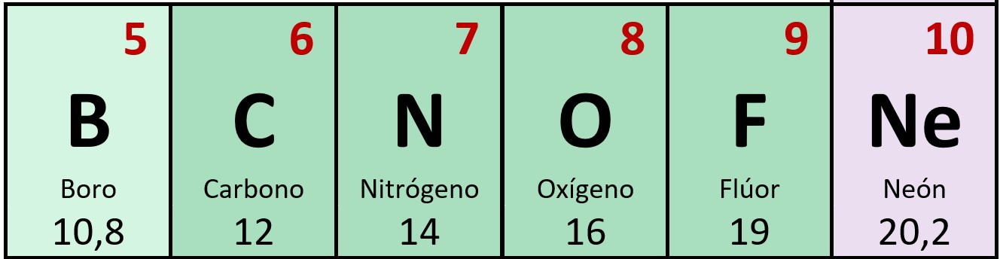
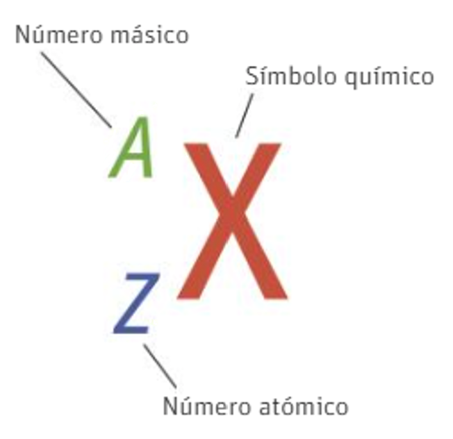

Las características de un átomo o de un ion vienen dadas por el número de partículas subatómicas que contiene (protones, neutrones y electrones)
Estructura de la materia
Identificación de un átomo
El número atómico y el número másico
El número atómico de un elemento (Z), es el número de protones que contiene su núcleo. Identifica completamente al átomo. De hecho, este número es el criterio que se usa para ordenar los elementos químicos en la tabla periódica:

Cuando un átomo es neutro, es decir, no tiene carga eléctrica, su número de protones (cargas positivas) es igual al número de electrones (carga negativa).
Como la masa de los electrones es muy pequeña en comparación de la de protones y neutrones, la mayor parte de la masa del átomo se encuentra concentrada en el núcleo. Por ello, la masa de un átomo se corresponde con la suma de las masas de los protones y neutrones del núcleo. Se define el número másico (A) como un número que nos indica la suma del número de protones y de neutrones que tiene el núcleo de un átomo.
Si llamamos N al número de neutrones, la relación de éste con el número atómico y el número másico es la siguiente:
A=Z+N
Toda la información de un átomo suele representarse con este esquema: (X representa el símbolo del elemento químico)
Se define como la doceava parte de la masa de un átomo de carbono-12 (12C). Equivale aproximadamente a la masa de un protón.
Los isótopos son átomos de un mismo elemento químico, por lo que todos ellos tienen el mismo número atómico, pero tienen distinta masa atómica, es decir tienen igual Z, pero distinto A. Como consecuencia, todos los isótopos de un mismo elemento tienen el mismo número de protones pero distinto número de neutrones.
Ejercicio resuelto
Pincha en la imagen para ver el vídeo del ejercicio resuelto

Ejercicio sobre partículas subatómicas neutras
Pincha en el enlace para resolver la ficha. Una vez terminada, pon tu nombre y apellidos y me llegará a mi correo. Suerte
Ejercicio resuelto
Si un átomo pierde electrones queda cargado positivamente, en un número igual al número de electrones que ha perdido. Por ejemplo, un átomo de sodio (Z=11, es decir 11 protones y 11 electrones), si pierde un electrón se convierte en el catión sodio (Na+) que sigue teniendo 11 protones, pero ahora solo 10 electrones.
Sin embargo, si gana electrones queda cargado negativamente en un número igual al número de electrones que ha ganado. Por ejemplo, un átono de sodio (Z=8, 8 protones y 8 electrones), si gana dos electrones se convierte en el anión óxido (O2-) que sigue teniendo 8 protones pero ahora tiene 10 electrones.
Pincha en la imagen para ver el vídeo del ejercicio resuelto
Ejercicio sobre partículas subatómicas con iones
En este caso nos pueden aparecer cationes, aniones e incluso átomos neutros. Cuidado con el número de electrones.
La carga debe escribirse así: 2+ o 2-, es decir, primero el número y luego el signo. Si el átomo no tiene carga hay que poner cero (0). Ojo con la ortografía, sobre todo con los acentos.